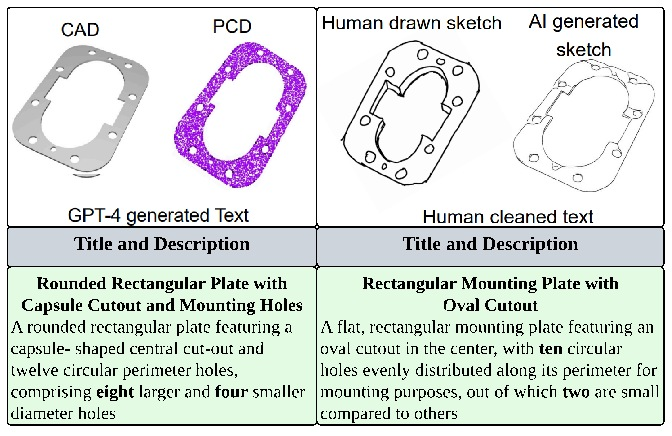
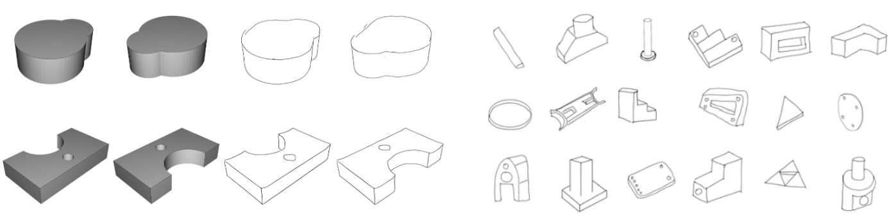
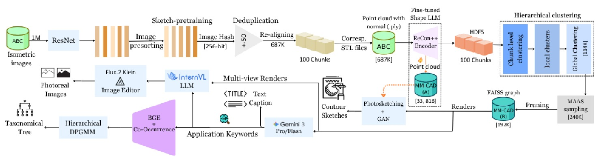
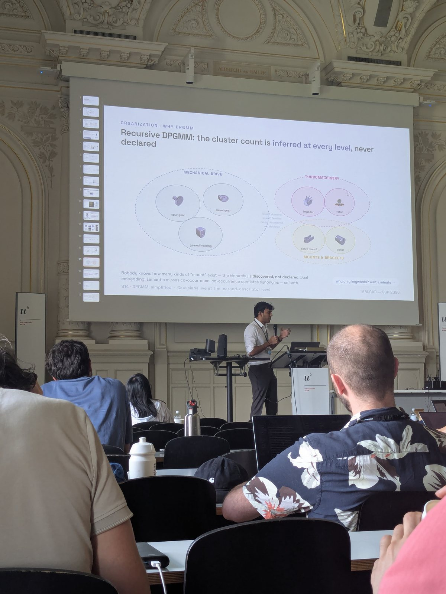

The idea
We built MM-CAD in two parts. We started with a collection of human-curated descriptions and sketches. We used it to learn which shapes are similar, then used those relationships to sample the much larger ABC collection. We released the data and a benchmark for searching across five kinds of input.
1The two collections
| MM-CAD:A | MM-CAD:B | |
|---|---|---|
| Source | 11 public benchmarks, including MCB, Fusion 360, ESB, CADParser, ShapeNet and ModelNet | ABC, about 1M models |
| Models | 33,816 | 192,626 |
| How it was built | Selected and annotated by people | Deduplicated, clustered and sampled by pipeline |
| Split | 27,048 / 3,376 / 3,392 | 173,363 / 19,263, along semantic clusters |
For MM-CAD:A, we brought 33,816 parts from 11 benchmarks under one set of identifiers. We generated point clouds and renders, had engineering students review the captions, and collected 3,276 real-case sketches. The example below shows how much detail a person can leave out of a sketch while still drawing a recognisable part.
We kept both generated contours and hand sketches because they serve different purposes. A contour can be generated consistently for a large collection. A hand sketch looks more like the query someone would actually submit, with a few defining features and plenty of omitted edges.




2Finding useful neighbours in ABC
The original ABC collection contains about a million models, including many near copies. After deduplication and processing, we grouped about 687,000 models using ReCon++ embeddings fine-tuned on MM-CAD:A. A typical group had only two models, while some contained many versions of one design. Sampling in proportion to group size would mostly show the retriever more variations of the common families.


We used Manifold-Aware Adaptive Sampling (MAAS) to sample across the groups and give rare geometry a chance to survive. We also kept useful variation within the larger groups before running the final geometry checks. Keeping those groups gives us hard negatives for training. Two parts can look nearly identical at a glance and still have geometry the search system should distinguish.
For MM-CAD:B, we used construction steps to write captions that can mention features a render alone may hide. We added contour sketches and a hierarchy of applications. We also generated in-context images for a subset of the models, using the CAD renders to guide the geometry.
3How we tested retrieval
We aligned five encoders in a shared space for sketches, text, images, B-reps and point clouds. The benchmark uses text, sketch and image queries against galleries of B-reps or point clouds. The paper and supplement include the retrieval results and examples of where the models get confused.
We trained the embeddings with a nested contrastive objective so that a shorter prefix can still be used for retrieval. That gives someone indexing a large part library a choice about how many dimensions to store and search.
In a separate caption study, descriptions based on construction data scored 3.23 out of 4 against 2.88 for the same language model using renders alone.
4Dataset and code
The dataset, training code and checkpoints are public. Metafold 3D used MM-CAD in an independent shape-embedding benchmark.
5The talk at SGP 2026
I presented the paper at the Symposium on Geometry Processing in Bern in July 2026. A Eurographics Widening Participation Scholarship funded the trip. The full recording is below.

